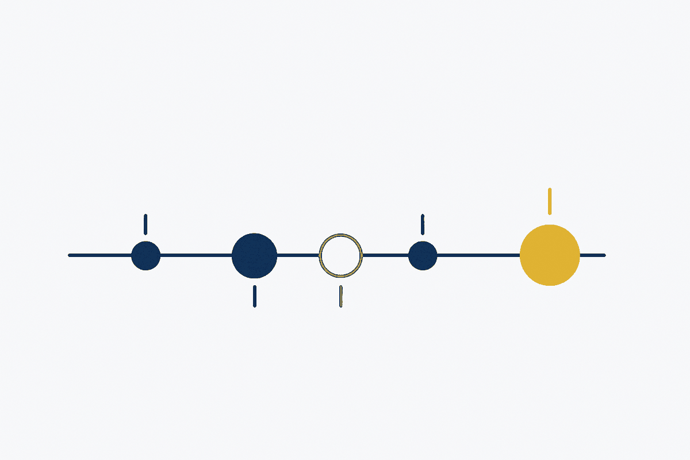

Not announcements — the working record. Every concept as it
was named, every article as it was written, every pattern as it was
recognised, together with the readings, sessions and second thoughts that
prompted them. Most of it is small. That is the point: the thinking shows
in the sequence, not in any one entry. Newest first.

Observation
Patterns and anti-patterns belong on one page
Restructuring the site navigation.
An anti-pattern is only legible against the pattern it fails to be. Splitting them into two pages hid that relationship behind the navigation — several of them are explicit counterparts.
A site arguing that diagrams are generated from metadata cannot illustrate the claim with a picture of a diagram — the illustration would be the anti-pattern it attacks. So one source model now renders into Mermaid, draw.io, PlantUML and yEd, all downloadable. The example is the proof.